00 — Studio Shapers
Who Needs Another Lighting Setup?
Fair. Mine is made of real gear.
Softboxes, grids, snoots, barn doors, umbrellas, flags and scrims for Cycles, built as real meshes, so they block, bounce and soften the light.
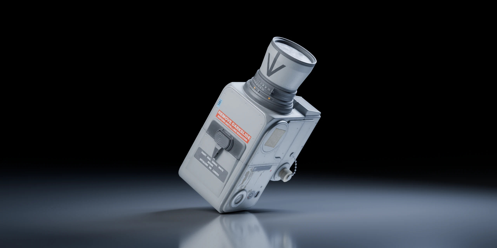
- Blender 5.1+
- Cycles only
- Version 1.0.1
Nobody needs another lighting setup. I made one anyway, and it’s made of gear: a softbox has a box, a grid has walls, a snoot is a tube, a flag is a board. Cycles traces the light through all of it, so the gear blocks, bounces and shapes light the way the real thing does.
You set brightness in stops (1 stop = double the light), tint lights with gels, and start from one of 14 setups with names you can look up, like Rembrandt. Cycles only, Blender 5.1 and newer.
01 — 12 Light Types
Twelve kinds of gear, one head
Here is the gear I was going on about: twelve types in three groups, as in Blender’s Add Light menu. Pick one to see the gear standing in the set and what the camera sees. Light lost inside the gear isn’t made up for (an umbrella, for one, loses some in the bounce), so some types come out darker than others.
The nine lights: same place, same power, same camera, so any difference comes from the gear alone.
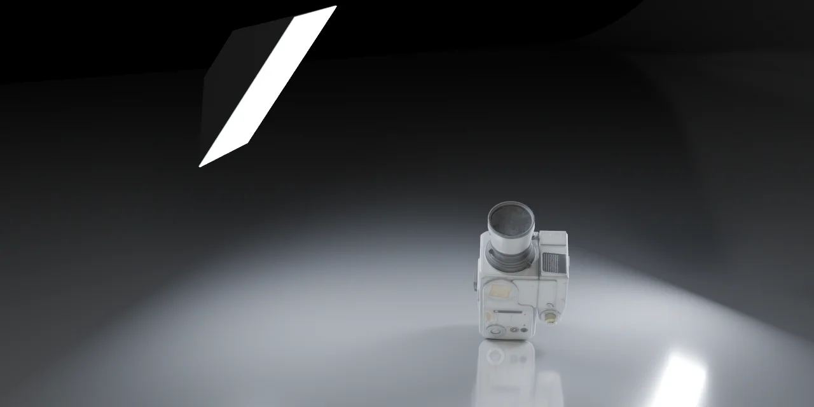
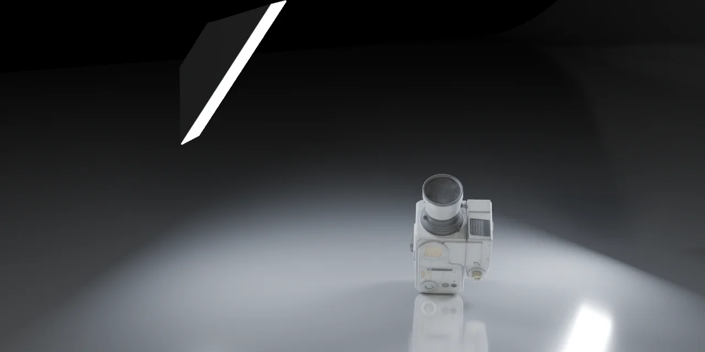
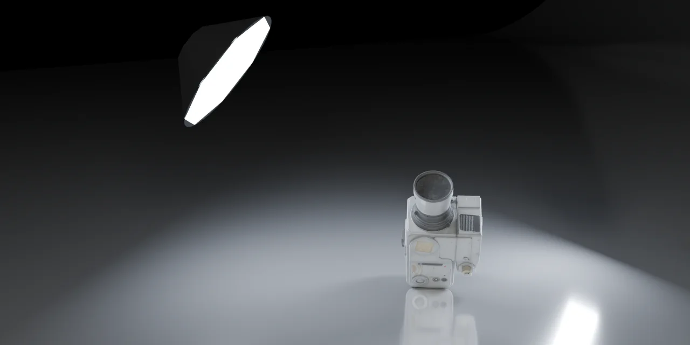
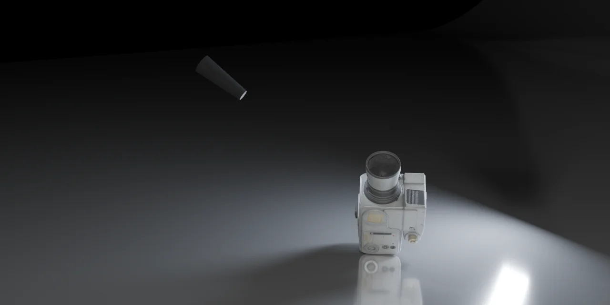
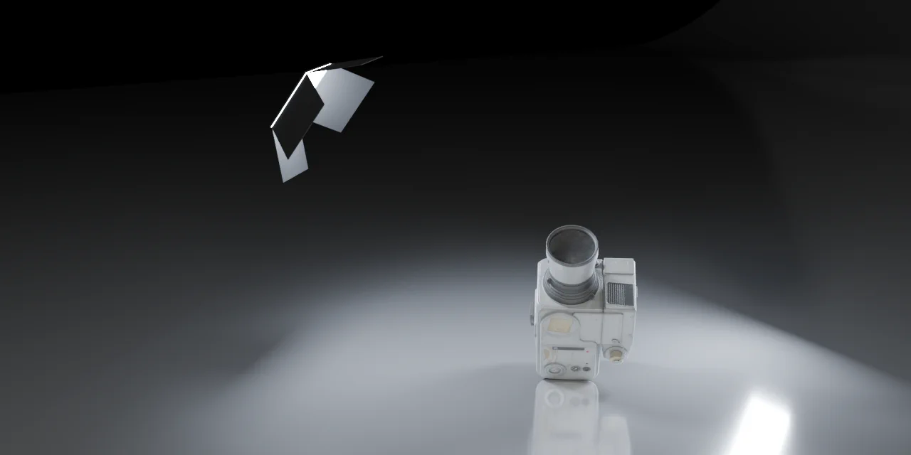
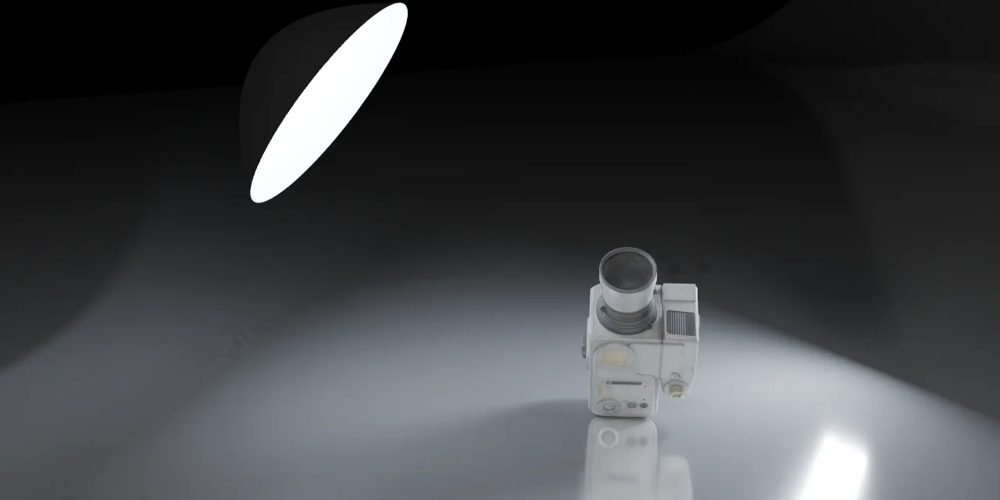
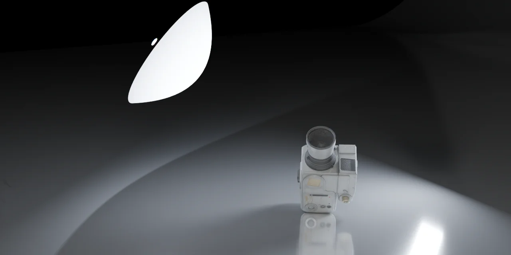
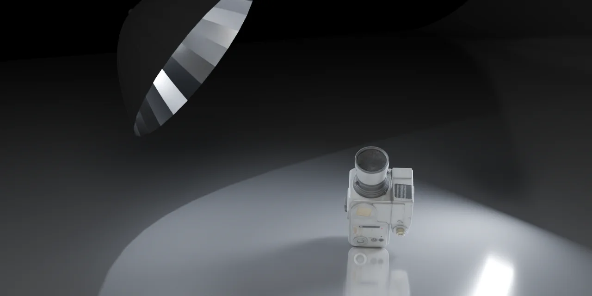
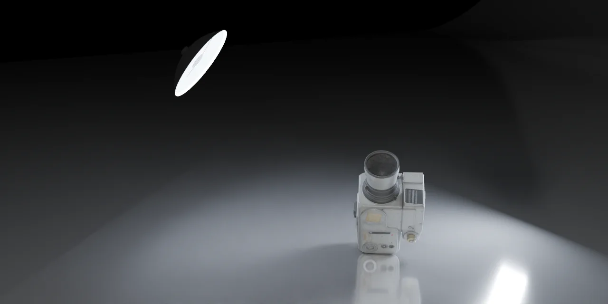
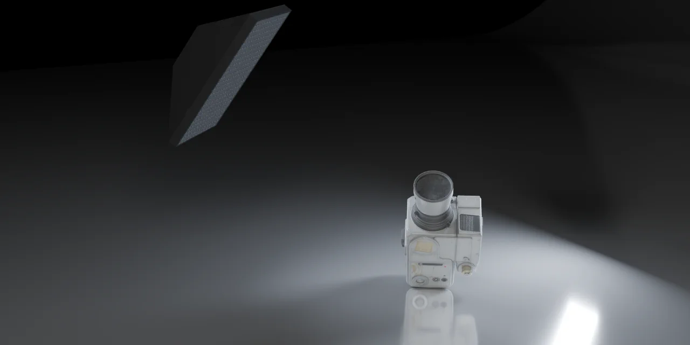
SoftboxA box with a black outside and a white inside; the front is an even rectangular light.See it work in Gear, below
Barn Doors: door angle, wide view
Barn Doors from another camera, farther back. This strip runs from 30° to 82°; in the panel each door goes from 0° to 140°, and past 90° it folds inward and cuts the beam. Picked in the menu above, Barn Doors stays at the default 45°.
The pictures here need JavaScript.
Flag, Reflector and Diffusion Scrim give no light; their pictures come from Gear, below, with another camera.
02 — Top Map
Move the light from above
Click Open Top Map and a small map opens in the viewport: you look straight down at the subject, and the orange dot is your light. I got tired of orbiting the viewport to find my own lights.
Drag the dot and the light circles the subject at the same height; drag the bar and only the height changes.
The pictures here need JavaScript.
Try it: drag the orange dot or the height bar, use the buttons, or click the map and use the arrow keys. One softbox, the Rembrandt main light, around the same head: 16 directions × 5 heights rendered in advance, so this page snaps to the nearest one. In Blender the light goes wherever you drag it.
In Blender, the white dot in the middle is the aim point, the small blue triangle at the bottom is the camera side, and Back is at the top. The bottom-left corner reads the light’s height and elevation, and other visible lights show as faint white dots. There, the mouse wheel over the map nudges the height by 5 cm (1 cm with Shift). Each drag is one Undo step, and Esc cancels a drag.
03 — Gear
Real gear, real shadows
Six pieces of gear up close, each with one setting to drag. Grids, snoots and barn doors control light only by blocking it with geometry, and light the gear blocks is not added back.
Change a size or a grid and the gear rebuilds on the spot; every value is live, and there is no Apply button for me to forget.
Grid
Tick Honeycomb Grid on a softbox, stripbox, octabox or snoot and a solid honeycomb sits in front of the opening. Each cell only lets through light that travels fairly straight, so the beam narrows. Deeper cells narrow it more.
The pictures here need JavaScript.
Flag
Select a light, then add a Flag: it hangs beside the beam, its lower edge on the line from the top of the light’s lit face to the center of the subject, so it blocks spill going up without shading the subject. It goes wherever the light goes.
The pictures here need JavaScript.
Diffusion Scrim
Select a light, then add a Diffusion Scrim: it hangs on the line from the light to the subject, facing the light, and softens the shadows it covers. Like the real cloth it costs light, and a button works out how much and brightens that one light to match.
The pictures here need JavaScript.
Reflector
A white or silver board with no light of its own. It works when another light hits it and bounces that light into the shadow side. Rembrandt, Loop and Clamshell use one as their fill.
The pictures here need JavaScript.
Snoot
A light at the back of a thick-walled, hollow, light-absorbing tube. The light has to travel down the tube, so what’s left is a small pool of light. Opening Diameter sets how big.
The pictures here need JavaScript.
Negative Fill
Lights by Role › Negative Fill puts a square black flag on the subject’s dark side, to take away light bouncing into the shadows. It can only take away light that is there: it shows when walls, a floor or a bounce card light the shadow side, and in a dark room it changes almost nothing.
The pictures here need JavaScript.
04 — Lighting Setups
14 setups you can look up
Select your subject, open Setups and pick one.
One click builds the lights around your subject, scaled to it, with the main light chosen and the others set in stops against it.
The pictures here need JavaScript.
The thumbnails are the add-on’s own picture menu. Click one to see that setup larger, on the same subject and from the same camera as its thumbnail: the head, the camera, or the glass bottle for Bright Field and Dark Field.
Portrait: Rembrandt, Loop, Butterfly, Clamshell, Split, Three-Point, Low-Key, High-Key. Product: Top Light, Dual Rim, Flat Lay, White Background, and two for glass, Bright Field and Dark Field, where the lit panel or the black flag is in the picture on purpose.
Angles and ratios come from common photography teaching material. Where the sources disagreed, I took a middle value. Distances are multiples of the subject’s size, so a subject four times bigger gets four times the distance and gear, 16 times the power, and the same light on it.
The menu’s top line, Main Light: Left, picks the camera side for the main light, and Swap Left and Right flips the lights already built. Lights the subject already had are hidden, not deleted; Show All brings them back. Broad and short lighting have no setup of their own: apply Loop, then turn the head.
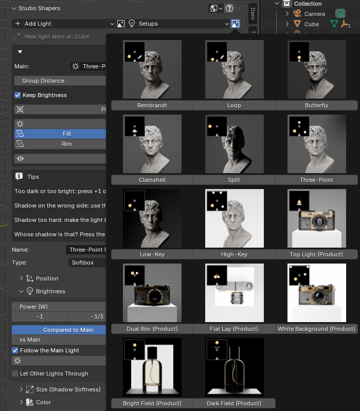
Save your own
Save as My Setup... stores the visible lights on a subject as a small file, role lights included, and applies it to any other subject, scaled to fit. Angles are kept relative to the camera, so the main light comes back on the same side in another scene. Save twice under one name and you get Name (2), not a lost setup.
05 — Let Other Lights Through
A box casts a shadow. Unless you ask it not to.
A softbox is a real box, so it casts a shadow when another light shines past it, just as it would in a studio. When a box stands between a light and the background, as the stripbox does in Three-Point, that shadow can show as a darker band on the background.
Tick Let Other Lights Through and the box stops blocking the other lights; its own light stays unchanged.
Three-Point. Tick the box, or drag the divider to compare.
Let Other Lights Through is the last line of Brightness on a Softbox, Stripbox or Octabox. Ticked, the box stops blocking the other lights, and its own light is unchanged: in my test renders it matched pixel for pixel. A Honeycomb Grid still blocks. It’s off by default, and the setups leave it off, because a box that blocks light is what real gear does.
06 — Keep Gear Above Floor
Gear that stays out of the floor
The setups are written for a subject with room below it. Put one right on the floor and a low or far light can end up partly under it. Keep Gear Above Floor (on by default) turns such a light up, only in elevation and around its own aim point, until it clears the floor by 1 cm, at most 20° higher than the setup said (a background light may go up to 50°).
A light that would end up under the floor is turned up until it clears it, within a limit. On by default.
White Background (Product), with the camera standing on the floor. Both halves are shown at the same exposure.
The same two setups, seen from the side with the gear made visible, at the same exposure.
It works for the built-in setups, My Setups and role lights, and the message names what was raised. A light still too low at that limit stays there, and the message says so: with the subject right on the floor, that can happen to Dual Rim and Dark Field. A table or a pedestal under the subject gives the lights room.
07 — Group Distance
Move the whole setup at once
Above the light list, Group Distance reads how far the main light stands from its aim point. Change it and every light on the subject moves nearer or farther by the same factor, each along its own direction, angles kept. With Keep Brightness on, power follows the square of the distance, so the subject stays as bright and the ratios hold.
Change Group Distance and every light moves nearer or farther together, angles kept; with Keep Brightness on, the subject stays as bright.
The pictures here need JavaScript.
Three-Point with Keep Brightness on. Drag Group Distance: every light moves out together, and their power goes up with the square of the distance.
Pick Group Aim Point
Click Pick Group Aim Point, then click the subject. Every light moves to aim at the new point, keeping its angle and its distance, and scrims and flags that follow a light come along. The point lands inside the subject, halfway to the far side, so a light from any side aims into it rather than at one spot of its skin. Ctrl+Z undoes either one.
The pictures here need JavaScript.
Three-Point, the group aim point moved from the chest up to the forehead. Every light moves with it.
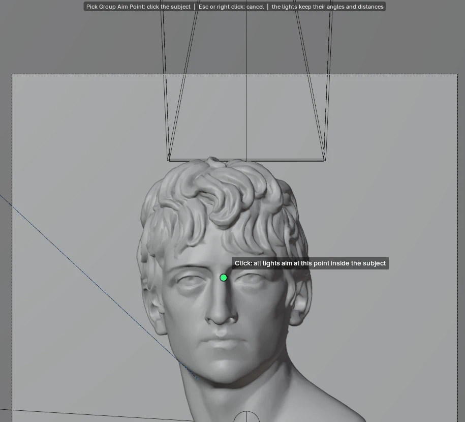
08 — Brightness
Brightness in stops
One stop = double the light. I never learned watts.
The light list shows every light’s stops against the main light, so you can read your ratios at a glance.
Under Power there are -1, -1/3, +1/3 and +1 buttons. One light is the main light, and every other light picks how it’s set:
- Compared to Main: type -2 in vs Main and it drops to a quarter of the main light, and the panel says so in words: 1/4 as bright. With Follow the Main Light on, turn the main light up or down and it keeps the ratio.
- On Its Own: Level 0 = 100 W, with the watts shown next to it. The main light leaves it alone.
The pictures here need JavaScript.
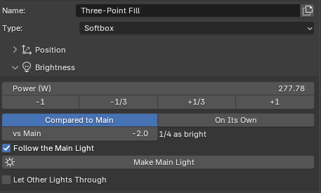
It’s an estimate: power after the gel over distance squared. Light lost inside the gear isn’t counted, so a softbox against a softbox compares well, and an umbrella against a softbox is a starting point. Your render gets the final word.
09 — Color
Color temperature & gels
Both live in the Color sub-panel. Tick Color Temperature and set Kelvin: lower is warmer, higher is cooler. 5600 K, the default, is daylight or flash, and 3200 K is a warm tungsten studio light.
Like a real gel, it changes the color and passes only part of the light, and the panel tells you how much.
The pictures here need JavaScript.
Three-Point, with Color Temperature on the main light only. That light reaches the wall too, so the wall shifts with it.
The pictures here need JavaScript.
Three-Point, with the gel on the main light only and Color Temperature off. The fill and rim stay white, so the color comes only from where the main light reaches: the face and the wall behind it. Unlike the Kelvin picture, the gel also passes less light. Plus Green and Minus Green come in 1/2 and Full only.
A gel is a sheet of colored filter that photographers clip in front of a light. CTO makes the light warmer and CTB cooler, in Full, 1/2, 1/4 and 1/8; Plus Green and Minus Green (Magenta) add or take away a green tint. Like a real gel, it changes the color and passes only part of the light, and the panel tells you how much: After the gel: 3196 K, lets 55% through (-0.9 stops). The shifts and how much light gets through are LEE Filters’ published values.
10 — Lights by Role
Lights by role, already in stops
Sometimes you want a job done, not a light type. At the bottom of Add Light, Lights by Role has Rim Light, Hair Light, Kicker, Cross Rim (2 Lights), Background Light and Negative Fill.
Pick a role and the light lands where that role usually stands, already set in stops against the main light.
Solo: one light at a time
Solo (the star in the light list) switches off every other light, in the viewport and the render, and a red bar at the top of the list says which one is on its own. End it with the star again, End, or Show All. Handy when the question is: whose shadow is that?
Lights: 3
The pictures here need JavaScript.
Three-Point. Click a star to light only that one; click it again, or Show All, to bring the others back.
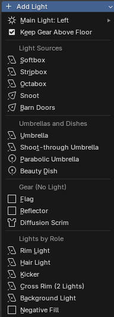
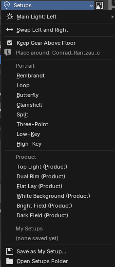
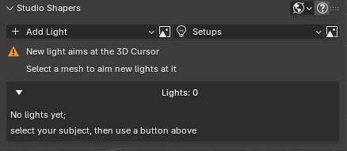
Pick a role and it lands where that role usually stands, on the side your Main Light: Left / Right choice says, already set in stops against the main light: Rim Light and Cross Rim one stop brighter, Hair Light and Kicker one stop under. It follows the main light from there. Want a different ratio? Change Stops vs Main in F9 right after adding it.
Background Light looks straight behind the subject, away from the camera, finds the first wall or backdrop, and lights it from between the two.
New lights share the main light’s aim point: pick a spot on the face for the main light, and the next lights aim there too. The line under Add Light tells you what the next light will aim at before you click; with no subject it turns orange and says the 3D Cursor.
11 — Visible to Camera
In the frame, out of the picture
Real gear often has to sit just outside the frame. Here it can sit inside the frame and still not show up.
Visible to Camera is off by default: the gear stays out of the camera image and still blocks, shapes and bounces light.
Three-Point, seen from farther back. The rim light’s stripbox stands in the frame, above and behind the head. Off, you can’t see it, but the dark band it casts on the wall is still there. On, its lit face shows at the top.
Turn it on only when you want to photograph the gear itself; the front of a softbox then reads as a glowing panel. Two setups turn it on for you, because the gear is the picture there: the lit panel in Bright Field and the black flag in Dark Field.
12 — Fine print
What it is not
- Cycles only. I only got the gear working with a path tracer. The panel offers a Switch to Cycles button and never switches engines on its own. In EEVEE, box lights, barn doors and grids cast shadows close to Cycles, but umbrellas and the Beauty Dish don’t light the subject, a scrim turns its light black, and a reflector adds nothing.
- Not brand measurements. The gear is an engineering approximation of common shapes: no IES profiles, no brand fabrics, no measured light distributions. The black parts are very dark, not perfectly absorbent. Power is Cycles watts, not flash watt-seconds.
- Scrims cost light. About 0.8 to 2 stops on the subject, much less when the light is bigger than the scrim; the button works it out. A scrim only softens the light that passes through it.
- Focus effects need a low Filter Glossy. At Cycles’ default (1.0) most of the Parabolic Umbrella’s focusing is blurred away; at 0, Focus Shift changed the beam by about 20%, with more noise. The add-on never touches Filter Glossy or your samples.
- Umbrellas can be noisy. They send light through an extra bounce, so give them more samples. The Beauty Dish is the exception: about as clean as an Octabox, at about twice the render time.
- Hidden from the camera, not from mirrors. Gear starts hidden from the camera and keeps working: it still blocks and bounces light, and it can still show in mirror-like reflections.
- Scene scale 1. Keep Unit Scale at 1 and don’t scale the lights; use the size fields.
- Without the add-on, it renders but doesn’t adjust. Everything it builds is ordinary Blender data, so a Blender without Studio Shapers (a render farm, say) renders the same image, and scrims and flags still follow their lights. Their Studio Shapers settings can’t be changed there.
Also in the box: Duplicate Light, and deletes that take the gear and aim point along. A note when Cycles’ Clamp Indirect is eating an umbrella’s light. And an English / Traditional Chinese UI.